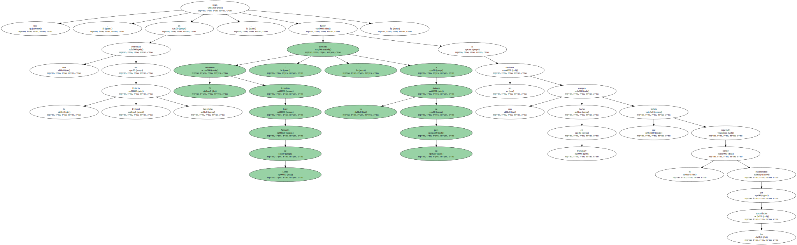
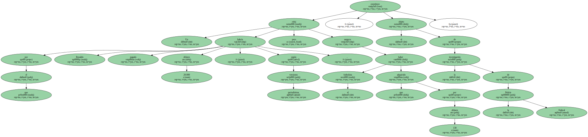
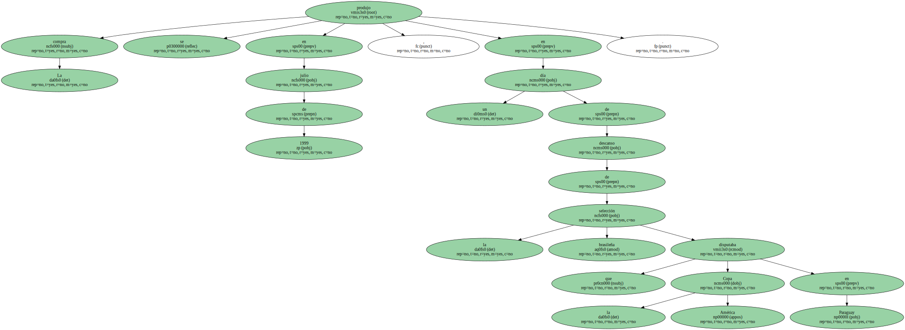
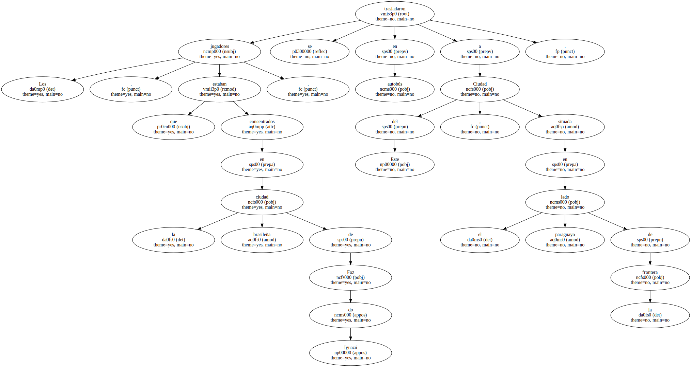
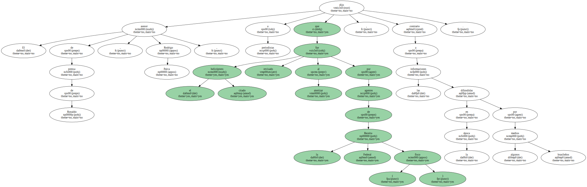
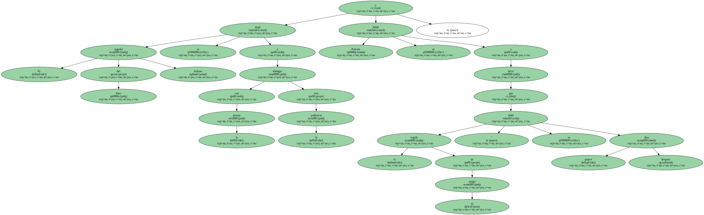

El delantero Ronaldo Luiz Nazario de Lima negó hoy , en una audiencia en la Policía Federal brasileña , haber " driblado " a la Aduana de su país al no declarar una compra hecha en Paraguay que habría superado el límite establecido por las autoridades.
Un reloj por el que Ronaldo habría pagado 20.000 dólares , según versiones periodísticas , pero que el futbolista asegura haber adquirido por 130 dólares , constituye el objeto de la investigación de la Policía Federal.
La compra se produjo en julio de 1999 , en un día de descanso de la selección brasileña que disputaba la Copa América en Paraguay.
Los jugadores , que estaban concentrados en la ciudad brasileña de Foz do Iguazú , se trasladaron en autobús a Ciudad del Este , situada en el lado paraguayo de la frontera.
Pero Ronaldo retornó a la concentración en un helicóptero , pasó literalmente volando sobre la Aduana y con ello habría burlado la fiscalización oficial al límite de compras de 500 dólares que rige para los brasileños que regresan al país.

El asesor de prensa de Ronaldo , Rodrigo Paiva , dijo a periodistas que el citado helicóptero fue revisado al aterrizar por agentes de la Receita Federal ( fisco ) , contrario a las informaciones difundidas en la época por algunos medios brasileños.
Ronaldo declaró durante más de una hora en las instalaciones de la Superintendencia de la Policía Federal , en Río de Janeiro , en compañía del abogado Michel Assef y el fisioterapeuta Nílton Petrone , quien fue el destinatario del reloj.

El jugador del Inter italiano se negó a dialogar con la prensa tras la audiencia y Petrone se limitó a decir que el regalo de su amigo " se dañó quince días después.
